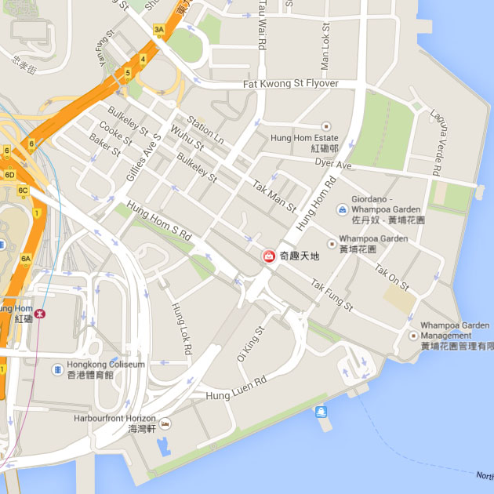
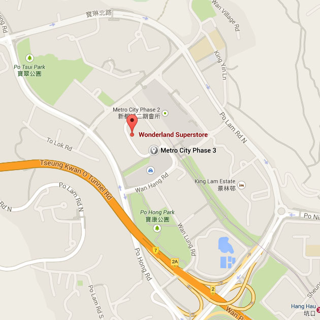
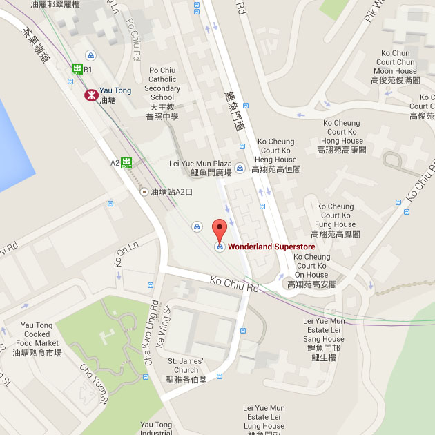

Stores
In our stores, you can find all kinds of products include clothings, toys, books, movies.
Yau Tong Store:

九龍油塘高超道38號
大本型315號舖
shop 315,3/F,Domain,
38 Ko Chu Road,
Yau Tong,
Kowloon.
TEL:(852)2616 0083
FAX:(852)2616 0668
Back to top
Tseung Kwan O Store:

新界將軍澳
新都城第三期 244-245號(地鐵寶琳站A1出口)
Shop No.244-245,Level 2,
Metro City,
Phase 3 Tseung Kwan O.
TEL:(852)2722 6330
FAX:(852)2722 6320
Back to top
North Point Store:

北角和富道21-53號和富中心和富薈G28-29號地下
Shop No. G28-29,G/F,
Provident Square,Provident Centre,
21-53WharfRoad,
NORTH Point,
Hong Kong.
TEL:(852)2628 1986
FAX:(852)2628 1968
Back to top